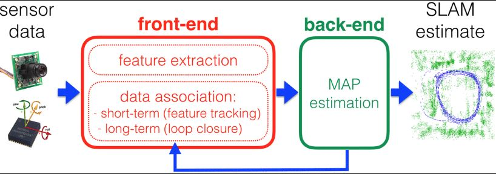
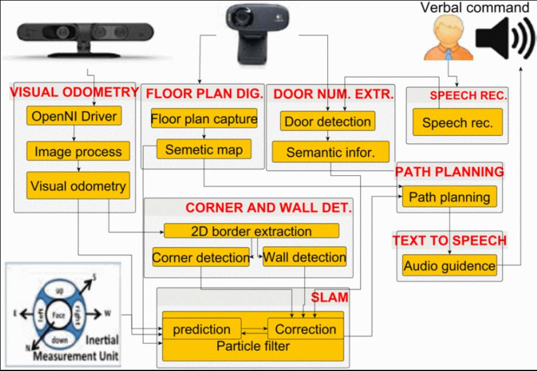
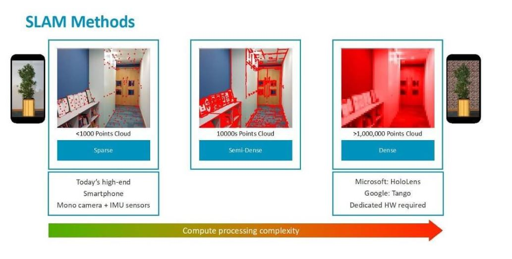

Introduction & Problem Definition
Many a time, I find it difficult to get direction indoors in a new place. I have seen many freshers at school having a hard time finding direction to their classrooms on the first day. It might get even harder for a person with low
vision.
People are relying more on their smartphones for navigation.GPS works well for outdoor navigation, but it isn't accurate for indoor navigation. Currently, there is no indoor navigation system that is both economical and accurate.
The focus of this project is to find the current location of a user at indoors which will help in developing a solution to indoor navigation problem to help especially people who have low vision to navigate thru indoors.
Sensor Possibilities
In this project,we will be using only the camera and sensors that are available in smartphones
There have been indoor navigation solutions using Infrared , Bluetooth beacons, wifi signal strength, RFID sensors, inertial sensors to track the user’s movements. These methods are not very economical as incur initial setup and
maintenance cost. Also it is not practical to setup base staitions for every indoors that we need to navigate thru.
Indoor Navigation techniques based on computer vision
1.Vanishing Point Calculation
In this method, vanishing points are calculated from lines in consecutive images.Line features from images are selected and the vanishing points are calculated by choosing the pixel getting the maximum intersection points of line
pairs.Some of the algorithms used in this techniques are:
Gaussian filter: This image processing techniques is used to reduce noise in the captured images. Once the noise reduction is done, the images will be sent for edge detection.
Canny edge detection: Edges are detected by the intensity gradient of pixels in the image. Pixels that have gradient magnitude above certain threshold are considered to make an edge.
Hough transforms: Lines that are edges has to be distinguished from the rest of the lines in the image. Hough line transform, and circle transform are used to detect lines and circles in the captured images respectively


Fig [1] Image of corridor1 on top and corridor 2 on bottom. Blue lines were found with Hough transformation and the red spot shows the place of the vanishing point
2.VSLAM
Visual simultaneous localization and mapping (VSLAM) technique is used for building a 3D global map of unknown environment while simultaneously keeping track of current location.
SLAM based systems consists of 4 parts:
1.Sensor Data: For VSLAM,data is obtained mainly from camera
2. Front-end: Feature points are unique location in images-example: Corners,T junctions.A good feature point is one that is reliable,i.e the algorithm must find the point in different viewing conditions(different camera
angle,onrotation,lighting change,blurring from motion etc).SLAM algorithm also provides the 3D position of the 2D feature points that the system has been tracking. This set of 3D points is known as a “point cloud”.These features also
need to be associated with landmarks – keypoints with a 3D position, also called map points. In addition, map points need to be tracked in a video stream.The back end can provide feedback to the front end for loop closure detection and
verification.
Long-term association reduces drift by recognizing places that have been encountered before (loop closure).
3.Back-End: Here, relationship between the video frames,device orientation and geometrical reconstruction is done.
4.SLAM estimate: This is the reslut from the above part that contains detected features and device postion in the area.

Fig [2] SLAM based System overview

Fig [3] SLAM based System architecture

Fig [4] SLAM Methods
VSLAM is based on developing visual odometry from RGB-D data from the images.[5] Hence it requires per-pixel depth sensing RGB-D camera which isn’t available in most of the smartphones today. Since depth cannot be directly inferred from a single image from a smartphone camera, it must be calculated through analyzing images in the chain of frames in the video using an Extended Kalman filter. Also, this method has complex computations due to which there could be considerable amount of delay in 3D reconstructions. Hence it is difficult to use VSLAM technique for Indoor navigation solution using current day smartphones.3.Computer Vision + Deep learnings
In this technique, deep learning and computer vision algorithms are integrated.Smartphone camera is used to detect immovable objects like doors and windows in indoors to identify the
current location.
Fig[5] System flow diagram
System flow
Static Object Detection & Identification: Smartphone Camera captures the images of indoors and sends it to server where the data from the images will be analyzed and deep learning and computer vision will be implemented.
Then,Faster-RCNN algorithm integrates region proposal, feature extraction, classification and rectangle-refine into one end-to-end network, and detects and identifies the static object.
Obtaining Control Points Coordinates: Control points are those physical feature points on static objects with accurately surveyed coordinate location and can be identified relatively easyily.Below algorithm is used to obtain

Algorithm to obtain Pixel Coordinates of Control Points in Test Images[6]

Fig[6] An example of output of above algorithm. The pixel coordinates of control points in test image are obtained from reference image.
Position Estimation: The geometric relation between control points in image and object space is determined via collinear equationDistance Estimation: In order to avoid gross error for the final position, distance estimation is then implemented to check the output of collinear equation model.
Success and Failures
Success
Munich-based 3D indoor mapping and navigation startup NavVis provides computer vision based indoor mapping and navigation solution to industries.
Deep Neural network based Autonomous indoor navigation of Micro Aerial Vehicles (MAVs) implementations have provided 70-80% success rate in real time experimental setup.[7]
Apple maps used WIFI triangulation to help indoor navigation in few airports.
Failure
Indoor navigation using the sensors incur initial set up and maintenance cost. They can’t be used in large scale.
Some methods require preloading indoor maps which is not a practical solution as it’s cumbersome and not feasible to get indoor maps of every other indoors that one might visit.
Deep learning based solutions may not work in unknown places as the the objects in the area may not match the images in the trained set.
Challenges
Indoor navigation with dark or Poorly lit indoors will be hard to achieve using computer vision techniques
Challenges specific to VSLAM technique:
1.Unknown environment-In SLAM,we don't use preloaded maps or building layouts
2.Smartphone cameras have single camera and its difficult to obtain depth data from image.
3.Complex Calculations
Future
Indoor positioning and indoor navigation (IPIN) have been organizing conference providing forum for researchers in the field of indoor positioning and navigation. With plenty of papers published and with an active research community like IPIN, It is indeed an area where a lot of research is taking place.
Related Videos
Autonomous Indoor Flight using Deep Learning.[7]
Indoor navigation using computer vision tutorial
Quiz
1.Why is sensor based indoor navigation technique not preferred?
2.What approach uses visual odometry and RGB-D images?
3.Which algorithm is used for for generating region proposals and a network using these proposals to detect objects ?
Answers:
1.a
2.b
3.a
References
[1] Ruotsalainen, Laura & Kuusniemi, Heidi & Chen, Ruizhi. (2011). Heading Change Detection for Indoor Navigation with a Smartphone Camera.
International Conference on Indoor Positioning and Indoor Navigation, IPIN 2011. 21-23. 10.1109/IPIN.2011.6071924.
Synopsis: This paper presents a solution to indoor navigation problem based on vanishing points calculated from lines in consecutive images.
Reliability: Laura Ruotsalainen is currently a Research Manager and the Deputy Director of the Department of Navigation and Positioning, Finnish Geospatial Research Institute, Kirkkonummi, Finland, where she leads the Research
Group on Sensors and Indoor Navigation. Heidi Kuusniemi is the head of the Department and a Professor with the Department of Navigation and Positioning, Finnish Geodetic Institute. Ruizhi Chen was an Endowed Chair and a Professor with
Texas A&M University Corpus Christ, USA, and the Head and a Professor of the Department of Navigation and Positioning, Finnish Geodetic Institute, Finland.
[2] Han, Shibo & Ahmed, Minhaz & Rhee, Phill. (2018). Monocular SLAM and Obstacle Removal for Indoor Navigation. 67-76. 10.1109/iCMLDE.2018.00023.
Synopsis: This paper aims at removing the obstacle to enhance the SLAM system performance that based on popular open source framework ORB-SLAM2 in dynamic environment.
Reliability: Since 1992, Phill Kyu Rhee has been an Associate Professor in the Department of Computer Science and Engineering of the INHA University, Incheon, Korea and since 2001, he is a professor in the same department and
university. This article’s work was supported by Basic Science Research Program through the National Research Foundation of Korea(NRF) funded by the Ministry of Education
[3] Zhang, Xiaochen & Li, Bing & Joseph, Samleo & Xiao, Jizhong & Sun, Yi & Tian, Yingli & Munoz, J. & Yi, Chucai. (2015). A SLAM Based Semantic Indoor
Navigation System for Visually Impaired Users.
1458-1463. 10.1109/SMC.2015.258.
Synopsis: This paper proposes a navigation system based on simultaneous localization and mapping (SLAM) and semantic path planning. This system uses multiple wearable sensors and feedback devices including a RGB-D sensor and an
inertial measurement unit (IMU) on the waist, a head mounted camera, a microphone and an earplug/speaker.
Reliability: Jizhong Xiao is a senior member of IEEE and has published more than 160 research articles in peer reviewed journal and conferences. Yingli Tian has been a Professor with the Department of Electrical Engineering, The
City College and the Department of Computer Science, The Graduate Center, The City University of New York, since 2008. She is one of the Inventors of the IBM Smart Surveillance Solutions.
[4] Sylwester Bala.“Introducing SLAM”. ARM community
Synopsis:It’s a short introduction to SLAM.
Reliability:This is an article in a blog on arm community.The author is a senior software engineer at ARM.
[5] Taketomi, Takafumi & Uchiyama, Hideaki & Ikeda, Sei. (2017). Visual SLAM algorithms: a survey from 2010 to 2016. IPSJ Transactions on Computer
Vision and Applications. 9. 10.1186/s41074-017-0027-2.
Synopsis: This paper categorizes and summarizes recent vSLAM algorithms proposed in different research communities from both technical and historical points of views.
Reliability: Takafumi Taketomi is a Senior Engineer at Huawei Japan Research Center. Also, he is an Affiliate Associate Professor at the Interactive Media Design Laboratory, Graduate School of Information Science, Nara Institute
of Science and Technology, JAPAN. Hideaki Uchiyama is an Associate Professor at National University Corporation Kyushu University
[6] Xiao, A., Chen, R., Li, D., Chen, Y., & Wu, D. (2018). An Indoor Positioning System Based on Static Objects in Large Indoor Scenes by Using Smartphone Cameras Sensors,
18(7),
2229. doi: 10.3390/s18072229
Synopsis: A journal article where authors propose a system to detect static objects in large indoor spaces and then calculate the smartphone’s position to locate users. The system integrates algorithms of deep learning and computer
vision.
Reliability: The paper is supported by the National Key Research and Development Program of China, the NSFC, the State Key Laboratory Research Expenses of LIESMARS. Sensors is the leading international peer-reviewed open access
journal on the science and technology of sensors and biosensors , published semi-monthly online by MDPI.
[7] Kim, Dong & Chen, Tsuhan. (2015).Deep Neural Network for Real-Time Autonomous Indoor Navigation arXiv:1511.04668v2 [cs.CV] 26 Nov 2015
Synopsis: In this paper, authors propose a practical system in which a quadcopter autonomously navigates indoors and finds a specific target, i.e. a book bag, by using a single camera. A deep learning model, Convolutional Neural
Network (ConvNet), is used to learn a controller strategy that mimics an expert pilot’s choice of action.
Reliability: Prof Chen Tsuhan is the Deputy President (Research and Technology) at National University of Singapore. He is currently the Chief Scientist of AI Singapore. Prior to his current appoint he was the Dean of the College
of Engineering[1]at Nanyang Technological University from 2015 to 2017. He was previously Director of the School of Electrical and Computer Engineering at Cornell University from 2009 to 2013.He is also an Honorary Professor
in Computer Science at National Chao Tung University, Taiwan. arXiv is a premier repository of electronic preprints approved for posting after moderation, but not full peer review.
Further reading:
1.Monocular Simultaneous Location and Mapping
Synopsis: Information on various SLAM methods and algorithms.
Reliability: This website is by students of Department of Computing, Imperial College London. This website forms a part of a group's project for their Computing Topics course.